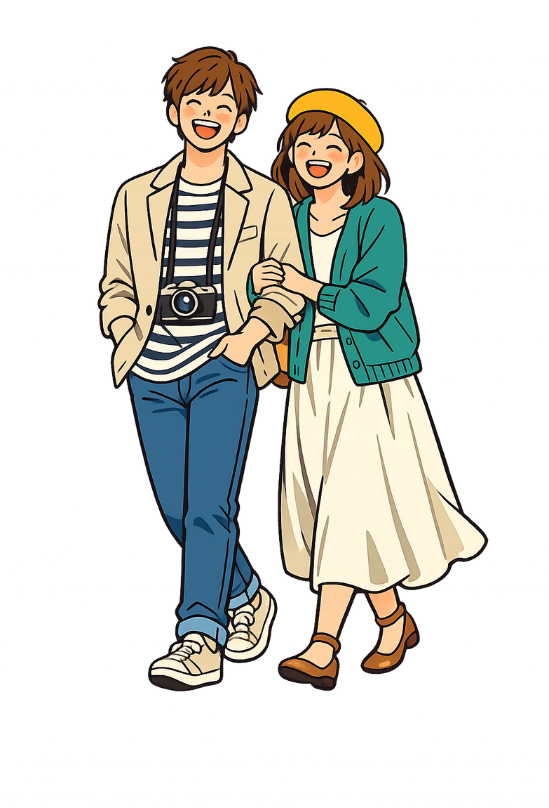
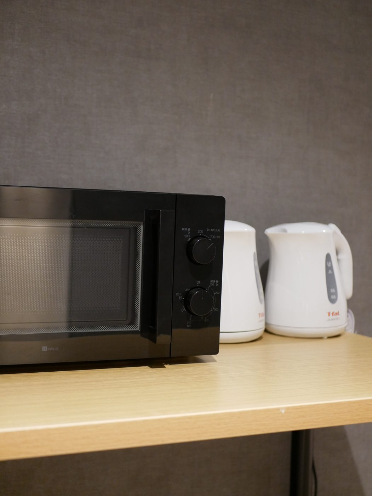
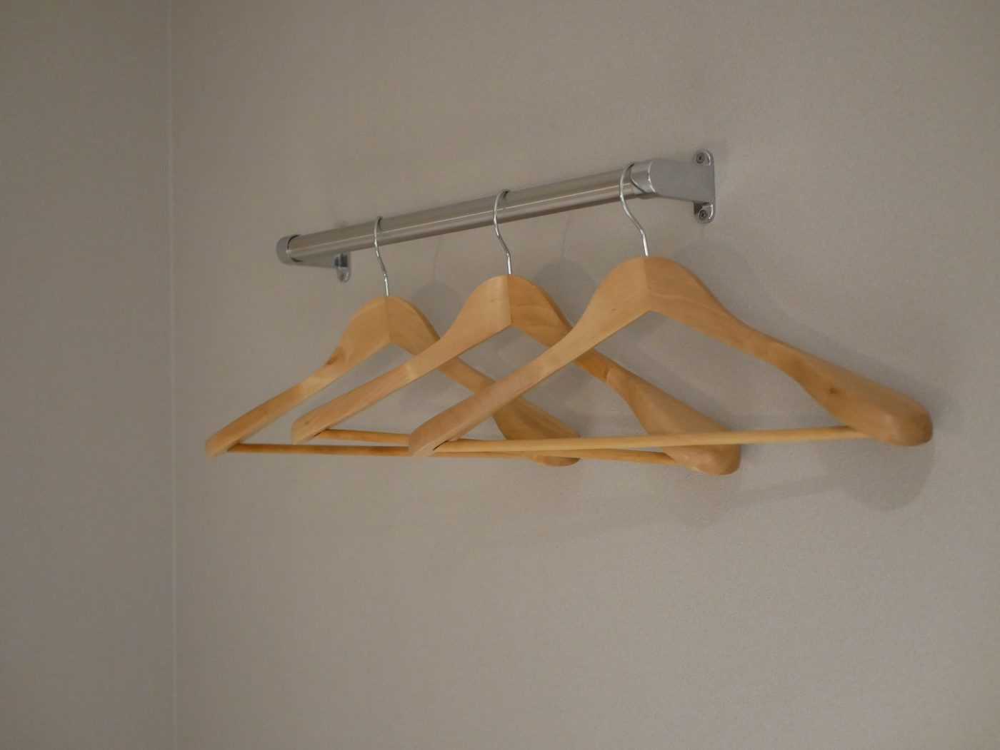
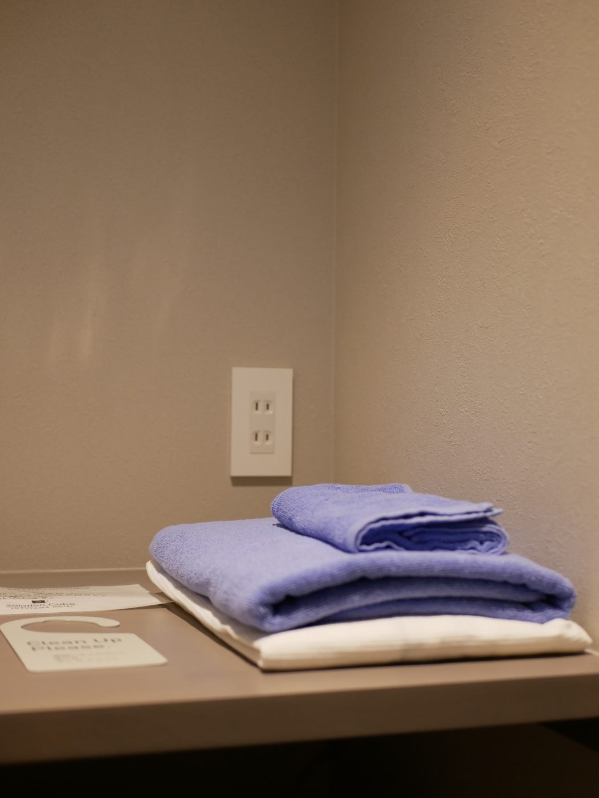
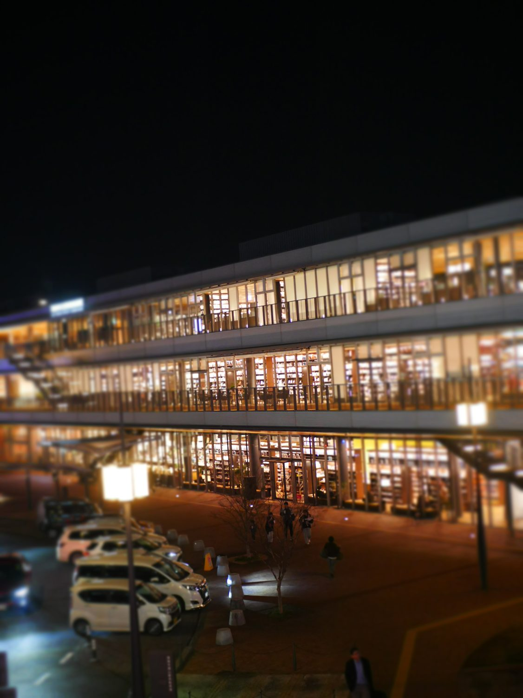
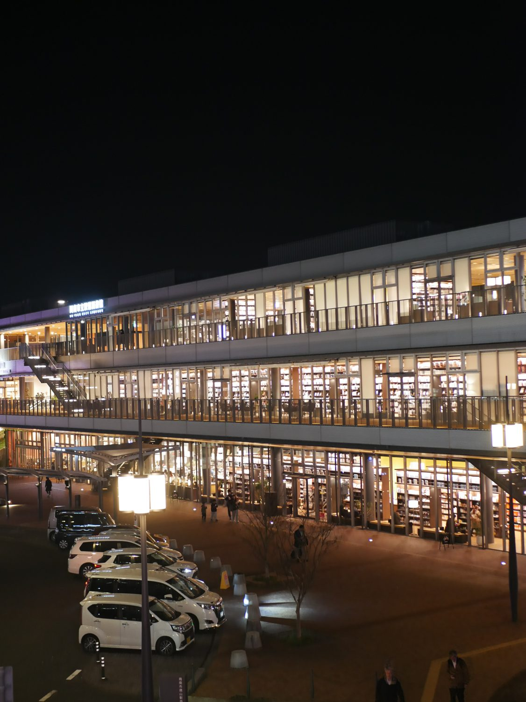

テレワークするもよし、
ゆったりするもよし。
JR徳山駅北口を出て、左手すぐ。仕事の合間にも、旅の夜にも寄り添う、自由自在な最適空間です。全室にネットワークとコンセントを備え、疲れた体はセルフロウリュのサウナで整える。飾らず、必要なものだけが、ちょうどよく揃っています。

JR徳山駅北口を出て、左手すぐ。仕事の合間にも、旅の夜にも寄り添う、自由自在な最適空間です。全室にネットワークとコンセントを備え、疲れた体はセルフロウリュのサウナで整える。飾らず、必要なものだけが、ちょうどよく揃っています。








SAUNA · SELF LÖYLY

営業時間 11:00〜23:00（最終受付 22:00）／ セルフロウリュ・水風呂・整いエリア完備。
※タオル等のアメニティは別途料金。料金は税込表記です。

団体（工場・プラントの定期修繕など）や長期（マンスリー）のご利用は、特別価格をご用意しております。お電話（0834-32-1270）でお気軽にご相談ください。
全室 無料Wi-Fi・コンセント完備。駅前1分で、移動の合間もそのまま個室で仕事に集中。ショートステイ（1,000円／1h）での休憩利用も可能です。
工場・プラントの定期修繕など、まとまった人数でのご宿泊に。全72室、駅前立地で移動もスムーズ。特別価格をご用意しますので、お電話でご相談ください。
長期滞在（マンスリー）は特別価格をご用意。単身赴任・長期出張の拠点としても。期間・人数に応じてお見積りいたします。
団体・長期のご相談・お見積りは TEL 0834-32-1270（受付 目安 9:00–22:00）まで。部活動・クラブチームの合宿・大会遠征は 合宿・団体プラン「雑魚寝しない、合宿。」 もご覧ください。
キューブホテル徳山
山口県周南市有楽町
北口を出て左手すぐ・徒歩1分
チェックイン 15:00–23:00 ／ チェックアウト 10:00
TEL 0834-32-1270
電車JR山陽本線・山陽新幹線 徳山駅 北口すぐ
お車専用駐車場はございません。近隣コインパーキングをご利用ください
徒歩1分スターバックス・蔦屋書店
徒歩3分大型商業施設 TOKUYAMA DECK
隣接吉野家・ローソン、ほか飲食店・居酒屋 徒歩圏内多数
広島・福岡から新幹線で広島から約30分・博多（福岡）から約45分。週末の途中下車、安く泊まれる山口の穴場としても。
まちを丸ごと楽しむ「周南ノスタルジー」特集も、あわせてご覧ください。
お電話でのご予約・お問い合わせ TEL 0834-32-1270受付目安 9:00〜22:00

FEATURE · 周南ノスタルジー
提携の純喫茶や大衆酒場をチケットでめぐる「まちごとホテル」企画。作られていない昭和を歩く、周南ノスタルジー旅の特集ページ。
特集を見る